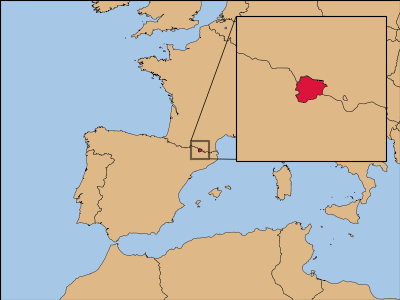
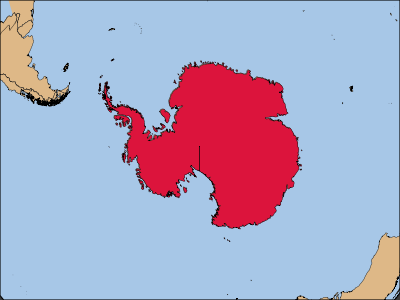
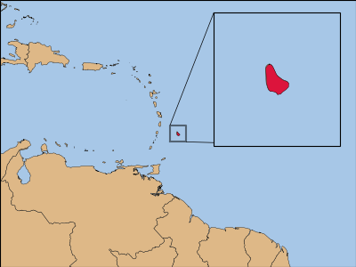

import cartopy
import cartopy.crs as ccrs
import geopandas as gpd
import matplotlib.pyplot as plt
from mpl_toolkits.axes_grid1 import inset_locator
import pandas as pd
from shapely.geometry import box, PointThis post makes a set of flashcards for countries. I chose an othrographic projection so that the location and sizes would be right.
Imports
geopandas is the main package for working with this geography data. It’s basically a pandas dataframe with an additional geometry column for plotting. I tried doing everything with only geopandas and matplotlib, but the plots would end up with odd artifacts. Using the cartopy package for plotting fixed them.
Set up the data
The data is saved from Natural Earth. There are a lot of choices to make here. I wanted to use the ISO 3166-1, but there are a few extras I added, like Kosovo. Some countries span a large area that can’t be graphed well because of the size, like France with Clipperton Island. For those cases, I drop any very small locations. For naming, if it was a group, like the United Kingdom, I wanted to use the group name, ADMIN, else the NAME_LONG tended to provide better text. Lastly, all the geometries were combined together.
# Load the world map from geopandas's built-in dataset
# https://www.naturalearthdata.com/downloads/110m-cultural-vectors/110m-admin-0-countries/
world = gpd.read_file("ne_10m_admin_0_map_units.zip", encoding='utf-8')
# Save all data for easier manual checking
world_save = pd.DataFrame(world.drop(columns='geometry'))
world_save.to_csv('world.csv', index=False)
# Fix some missing 'ISO_A3_EH'
world.loc[(world['ISO_A3_EH'] == '-99') & (world['TYPE'].isin(['Disputed', 'Geo unit', 'Sovereign country'])), 'ISO_A3_EH'] = world.loc[(world['ISO_A3_EH'] == '-99') & (world['TYPE'].isin(['Disputed', 'Geo unit', 'Sovereign country'])), 'GU_A3']
world = world[['ADMIN', 'NAME_LONG', 'ISO_A3_EH', 'geometry']]
# drop out very small dependencies, like clipperton island
world['area'] = world.area
world['area_percent'] = world['area'] / world.groupby('ISO_A3_EH')['area'].transform('sum') * 100
world = world.loc[world['area_percent'] >= 2.5]
# use NAME_LONG for the name
# unless there's more than one row, then use ADMIN
world['ISO_COUNT'] = world.groupby('ISO_A3_EH')['ISO_A3_EH'].transform('size')
world['NAME'] = world['NAME_LONG']
world.loc[world['ISO_COUNT'] > 1, 'NAME'] = world.loc[world['ISO_COUNT'] > 1, 'ADMIN']
# Fix Falkland Islands / Malvinas for use as a file name
world['NAME'] = world['NAME'].str.replace('/', '-')
# combine geometries together
world = world.dissolve(by='ISO_A3_EH').reset_index()
# Save information for a file
country_data = {}The Main Loop Part 1
For each country, I needed to find a lat/long point to set the orthographic projection. This should be the center of the country. I first use a point on the bounding box to get close and estimate the UTM crs from there. Averaging the points on the bounding box or using centroid will fail on counties like Kiribati because it cross the International Date Line. An average of the bounding box wraps back around to the Atlantic Ocean instead of the center of the country in the Pacific Ocean. Therefore the multistep process of using UTM then centroid has to be done, instead of using centroid from the start. Also, Antarctica fails for estimating the UTM crs, so it is handled separately. Then after setting that point, the centroid of the country can be found and the projections can be set from there. Finally, some stats used for determining mapping options are saved.
for country_a3 in world['ISO_A3_EH']:
country_name = world.loc[world['ISO_A3_EH'] == country_a3]['NAME'].item()
print(f'{country_a3}: {country_name}')
# Skip over additional areas
if country_a3 == '-99':
continue
# Antartica fails on estimate_utm_crs()
if country_a3 == 'ATA':
# Find a starting point
location_data = pd.DataFrame({
'location': ['center'],
'x': 0,
'y': -90
})
geometry = [Point(xy) for xy in zip(location_data.x, location_data.y)]
location_data = gpd.GeoDataFrame(location_data,
geometry=geometry,
crs='EPSG:4326')
# Now convert to ortho based on the correct point
crs = ccrs.Orthographic(central_latitude=-90,
central_longitude=0)
crs_proj4 = crs.proj4_init
else:
# Find a point to base everything on
# Kiribati shows it needs to be bounds becase it crosses over the edge
# so using a centeroid fails because it averages out to the Atlantic
# instead of the pacific
country = world[world['ISO_A3_EH'] == country_a3]
xmin, ymin, xmax, ymax = country["geometry"].total_bounds
location_data = pd.DataFrame({
'location': ['center'],
'x': [xmin],
'y': [ymin]
})
geometry = [Point(xy) for xy in zip(location_data.x, location_data.y)]
location_data = gpd.GeoDataFrame(location_data,
geometry=geometry,
crs=country.crs)
# Convert country data to a crs that works around here
country = country.to_crs(location_data.estimate_utm_crs(datum_name='WGS 84'))
# Now need to convert center to usable form
location_data = pd.DataFrame({
'location': ['center'],
'x': [country.centroid.x],
'y': [country.centroid.y]
})
geometry = [Point(xy) for xy in zip(location_data.x, location_data.y)]
location_data = gpd.GeoDataFrame(location_data,
geometry=geometry,
crs=country.crs)
# now to lat long
location_data = location_data.to_crs('EPSG:4326')
# Now convert to ortho based on the correct point
crs = ccrs.Orthographic(central_latitude=location_data['geometry'].y.item(),
central_longitude=location_data['geometry'].x.item())
crs_proj4 = crs.proj4_init
# Convert the world, location, and country data to the right projection
world_ortho = world.to_crs(crs=crs_proj4)
location_data = location_data.to_crs(crs=crs_proj4)
country = country.to_crs(crs=crs_proj4)
# Find some sizes to determine how to plot the data
country = world_ortho[world_ortho['ISO_A3_EH'] == country_a3]
xmin, ymin, xmax, ymax = country["geometry"].total_bounds
country_size = (xmax - xmin)*(ymax - ymin)
country_area = country['geometry'].area.item()
country_proportion = country_area/country_sizeThe Main Loop Part 2
The rest of the loop plots the maps. First, some defauls are set for each plot. Backgrounds, the world map, and the individual country are plotted. Then, if the country is very small, an arrow is drawn, if the country is kind of small, an inset map is drawn, or if the country is largely water, the bounding box is drawn. These options make the map easier to understand.
# Set up some basics
bounds_increase = 1_500_000
country_color = '#DC143C'
water_color = '#A7C7E7'
land_color = '#DEB887'
map_indicator = ''
# This is the basic set up for all of the plots
fig, ax = plt.subplots(subplot_kw={"projection": crs})
fig.set_size_inches(4, 3)
fig.subplots_adjust(0, 0, 1, 1)
# Space color
fig.set_facecolor('#3B3B3B')
# Equator line
ax.gridlines(draw_labels=False,
color='#636363',
linewidth=0.5,
ylocs=[0],
xlocs=[],
linestyle=(0, (5, 5)))
# location_data buffer for the oceans
# 6400000 makes a circle that works a long the edges
# used trail and error to find it
location_data['geometry'] = location_data['geometry'].buffer(6_400_000)
ax.add_geometries(location_data['geometry'],
crs=crs,
color=water_color)
# Add background world
ax.add_geometries(world_ortho["geometry"],
crs=crs,
color=land_color,
edgecolor='black',
linewidth=0.25)
# Add country map
ax.add_geometries(country["geometry"],
crs=crs,
color=country_color,
edgecolor='black',
linewidth=0.25)
# If the country is very small (just Vatican city), use an arrow to mark it
if country_size <= 50_000:
xcenter = (xmin + xmax) / 2
ycenter = (ymin + ymax) / 2
ax.annotate("",
xy=(xcenter, ycenter),
xytext=(xcenter, ycenter + 450_000),
arrowprops=dict(arrowstyle="->",
connectionstyle="arc3",
color=country_color,
linewidth=2))
map_indicator = 'Arrow'
# If the country is small, add an inset map
elif (country_size <= 22_500_000_000) or (country_size <= 50_000_000_000 and country_proportion <= .01):
iax = inset_locator.inset_axes(ax,
width=1.5,
height=1.5,
loc="upper right",
borderpad=1,
axes_class=cartopy.mpl.geoaxes.GeoAxes,
axes_kwargs=dict(xticks=[],
yticks=[],
projection=crs))
iax.gridlines(draw_labels=False,
color='#636363',
linewidth=0.5,
ylocs=[0],
xlocs=[],
linestyle=(0, (5, 5)))
iax.add_geometries(location_data['geometry'],
crs=crs,
color=water_color)
iax.add_geometries(world_ortho["geometry"],
crs=crs,
color=land_color,
edgecolor='black',
linewidth=0.25)
iax.add_geometries(country["geometry"],
crs=crs,
color=country_color,
edgecolor='black',
linewidth=0.25)
bounds_increase = 55000
iax.axis([xmin - bounds_increase,
xmax + bounds_increase,
ymin - bounds_increase,
ymax + bounds_increase])
x = [xmin - bounds_increase,
xmax + bounds_increase,
xmax + bounds_increase,
xmin - bounds_increase,
xmin - bounds_increase]
y = [ymin - bounds_increase,
ymin - bounds_increase,
ymax + bounds_increase,
ymax + bounds_increase,
ymin - bounds_increase]
ax.plot(x, y, color='k', alpha=0.5, transform=crs)
_ = inset_locator.mark_inset(ax, iax,
loc1=2, loc2=4,
linewidth=0.5)
map_indicator = 'Inset'
# Reset bounds_increase for final map
bounds_increase = 1500000
# If the country is mostly ocean, add a bounding box
elif country_proportion <= .01:
bounding_box = box(xmin, ymin, xmax, ymax)
bounding_box_gs = gpd.GeoSeries(bounding_box)
ax.add_geometries(bounding_box_gs,
crs=crs,
facecolor='none',
edgecolor=country_color,
linewidth=0.5)
map_indicator = 'Box'
# Finish out the plot and save it
ax.axis("equal")
ax.axis([xmin - bounds_increase,
xmax + bounds_increase,
ymin - bounds_increase,
ymax + bounds_increase])
plt.savefig(f'plots/{country_name}.png')
plt.close(fig)
country_data[country_a3] = [country_name,
country_size,
country_area,
country_proportion,
map_indicator]Saving Some Data
Throughout this code, some data has been collected. At the end it’s saved to a csv used to manually determine cutoffs for mapping options.
# Save country data
# useful to determine cutoffs in the code above
country_df = pd.DataFrame.from_dict(country_data, orient='index',
columns=['Name',
'Size',
'Area',
'Proportion',
'Indictor'])
country_df.to_csv('country_data.csv', index_label='ISO')Here are some of the plots. The code and the rest of the outputs can be found at the GitHub repo. These can be added to an Anki deck using the Media Import 2 add-on.



